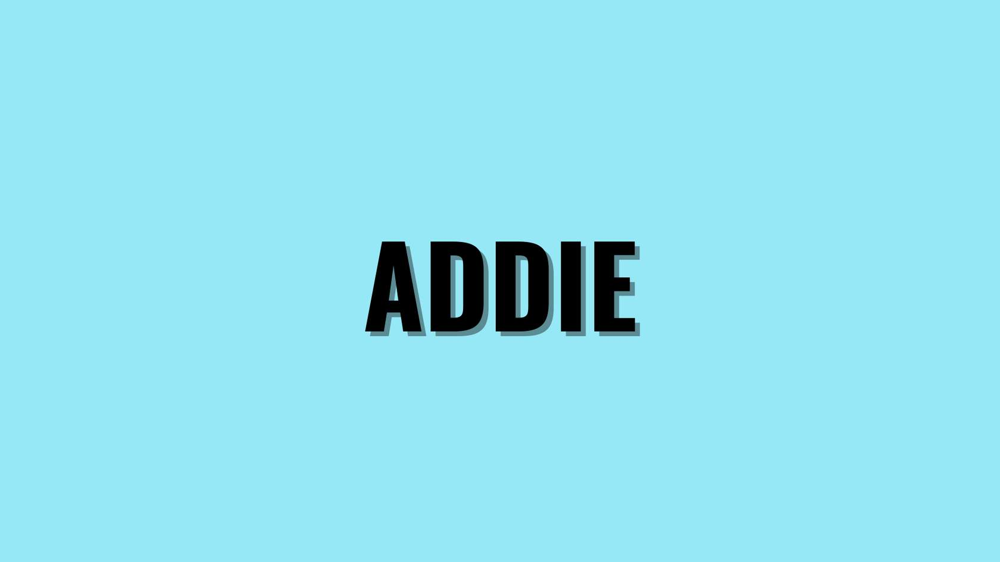
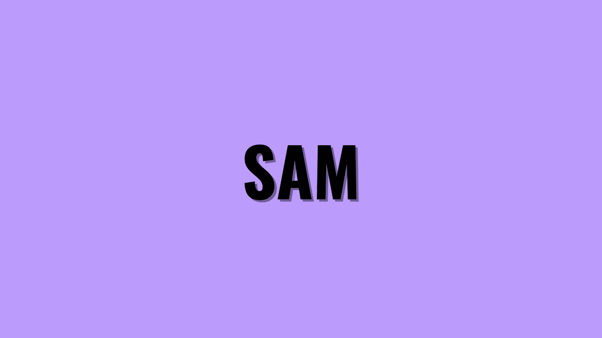

This section contains course project plans, content outlines, and design storyboards from past projects that demonstrate my application of various instructional design methodologies in full cycle training development and project management.
The first section shows five different instructional design frameworks and models I utilized to create corporate training products covering topics from accessibility guideline training to technical tool implementation instruct. The ID model for each project was chosen in collaboration with employees, stakeholders, and leaders from SMBs to Enterprises based on their feedback, training needs analysis data, learning management system reports, client/budget expectations, and my own insights and expertise.
The second section is a showcase that includes a content plan, course outline, and full storyboard created during the Design phase for a module that was part of a corporate HR training program built according to the ADDIE Model.

Description: This course plan and design for a Constructive Feedback in the Workplace course that was part of a client's initiative to train team managers on using feedback as a positive professional development and skills growth tool.
Link to ADDIE Project OutlineDescription: This microlearning-based design outline was for instructional design managers who need to share their learnings from PMI and PMBOK certification courses with their ID team for project management practice improvements.
Link to 70-20-10 Course PlanDescription: This course plan and design was for a full introductory training course for L&D associates over 508/WCAG accessibility guidelines.
Link to Gagne's 9 Events StoryboardDescription: This course design covered the successful ways remoteonly L&D teams could interact, collaborate, and create full courses together in a fully virtual environment.
Link to Merrill's Project Plan
Description: This project outline describes a CONTINUE TO COURSE DESIGN & CONTENT STORYBOARDS technical training course introducing a new chat system to crisis support specialists. The emphasis of the course was transferring existing skills learned on the legacy chat system to a new chat system that enhanced service to a wider audience in time efficient manner.
Link to SAM Course/Project OutlineThe Course Content Plan provides a structured and comprehensive learning experience, outlining the: desired course outcome, learning objectives, topics, target audience, and learning solutions to be included in the Constructive Feedback In the Workplace course.
The Course Outline provides a high-level overview of the course, including its structure, modules, and assessments, helping learners understand the course's organization. The bibliography for the course content is also attached to this document.
This Content Storyboard and course contents were constructed according to the ADDIE model. It thoroughly details the visual representation of the course content, how each module and layer are presented, and includes multimedia, scenarios, and a quick-reference job aid produced in Lucid. Scripts for the dialogue are found at the end of this storyboard.